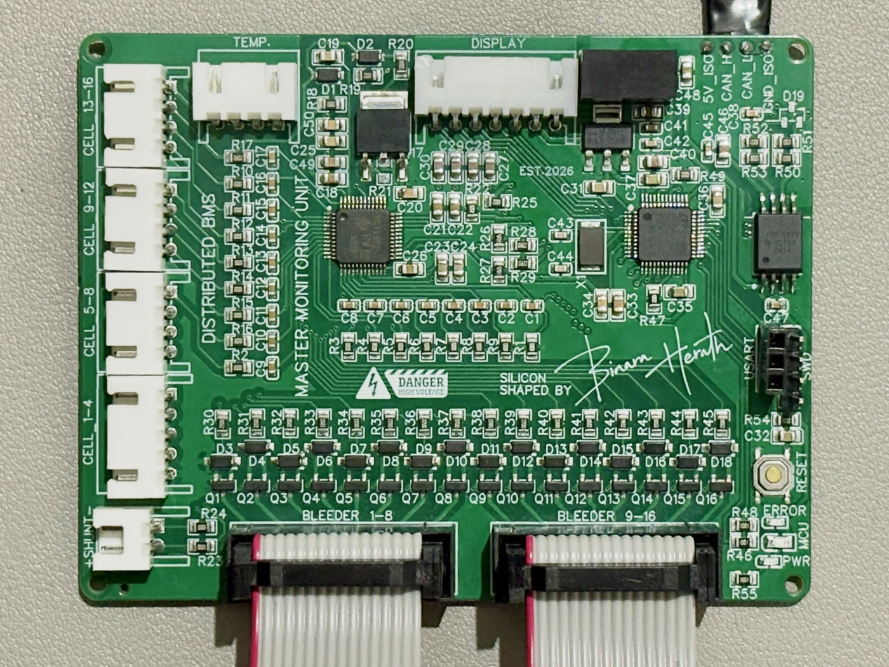
ONE PER 16 CELLS
Master Monitoring Unit
Custom 4-layer PCB · STM32F103C8T6 + TI BQ76952Measures 16 cells, current and 4 temperatures. Handles protection, state of charge, balancing and the OLED display.
Need more cells? Just add another Master Monitoring Unit to the same CAN bus. The current one keeps working, and you don't need a bigger BMS.
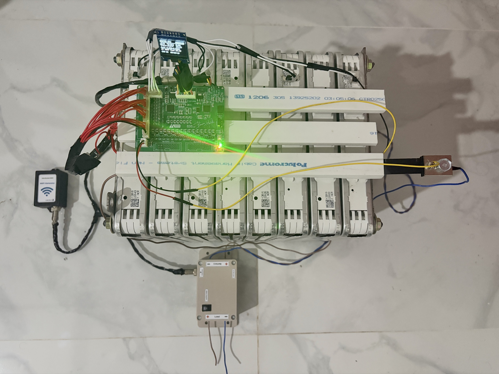
They can get a second life in home or solar storage. But aged cells are not equal anymore, so every cell has to be watched closely.
Most low-cost BMSs are centralized: one board measures the cells, protects them, switches the contactors and handles communication. Two things go wrong with that.
A 16S BMS can only handle 16 cells. To go to 32S or 64S you have to throw the old BMS away and buy a bigger, much more expensive one.
If that one controller hangs, monitoring and protection are both lost at the same time.
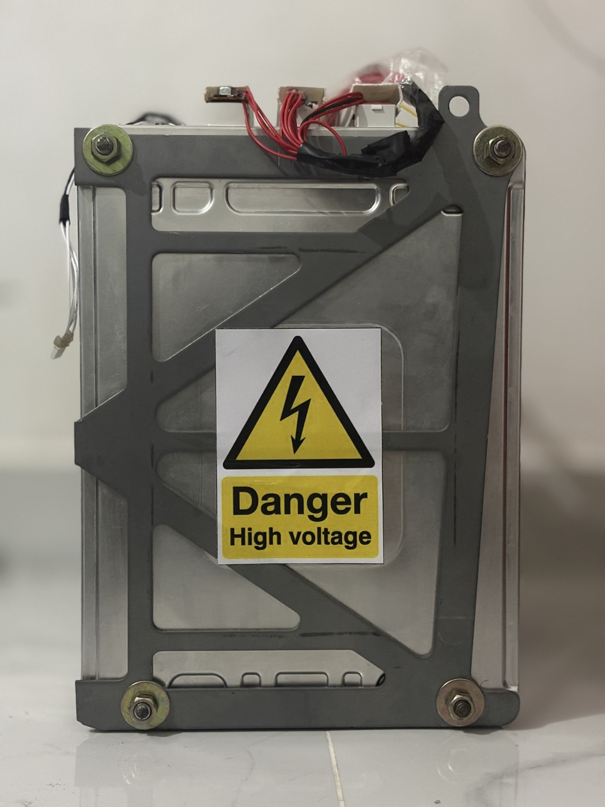
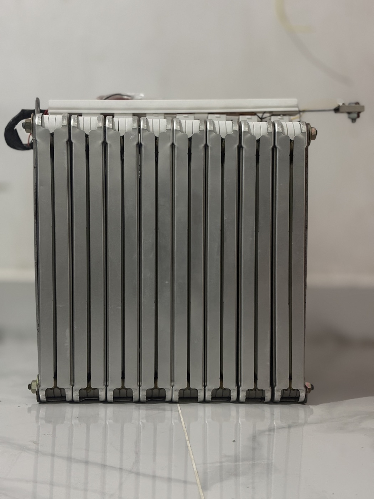
The pack built so far is 16S, made from 8 second-hand Nissan Leaf modules (2S2P each).
The BMS is split into three kinds of units on one isolated CAN bus. The System Controller Unit and the WiFi Gateway are separate and shared by every Master Monitoring Unit.

Measures 16 cells, current and 4 temperatures. Handles protection, state of charge, balancing and the OLED display.
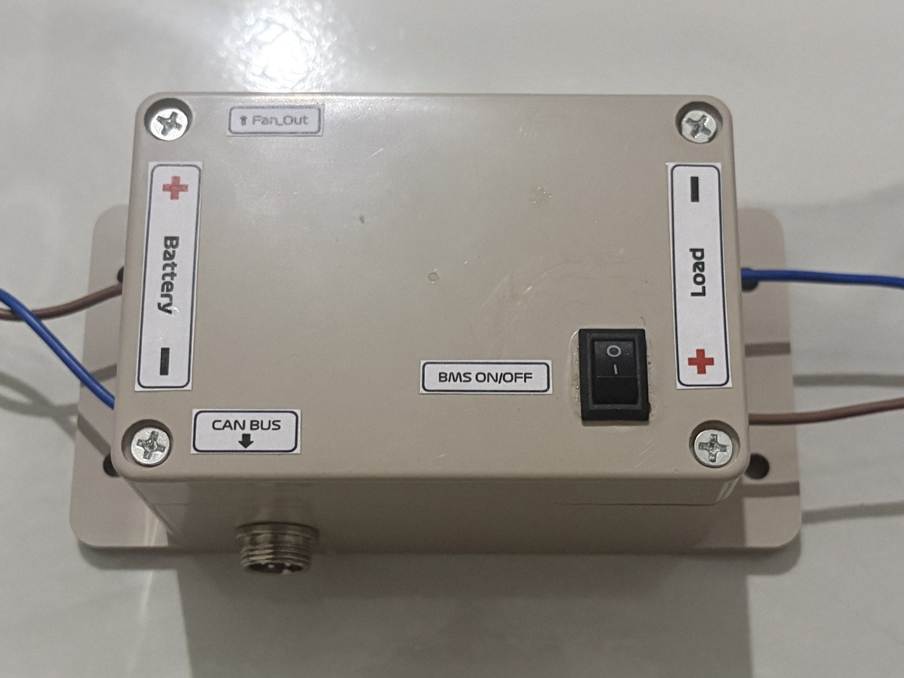
Precharge, main contactors, charge enable, PWM cooling fan and fail-safe shutdown.
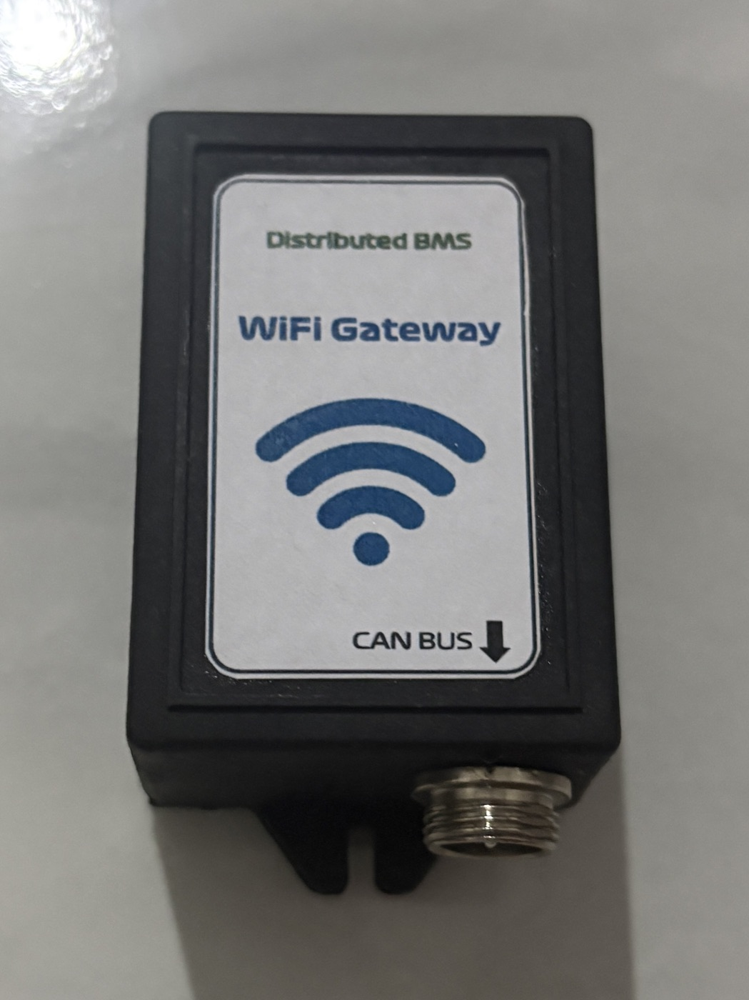
Listens to the whole bus, publishes JSON over MQTT and forwards remote commands.
To make the pack longer (16S → 32S → 48S → 64S), connect one more Master Monitoring Unit to the bus. The existing hardware stays as it is.
1 Master Monitoring Unit · 16 cells · shared units unchanged
| Centralized BMS | This distributed BMS | |
|---|---|---|
| Going from 16S to 32S or 64S | Buy a new, bigger BMS | Add one Master Monitoring Unit per 16 cells |
| Controller and gateway | Built into the one board | Shared by all units, added only once |
| One controller hangs | Monitoring and protection lost | The other units notice and make the pack safe |
| WiFi or cloud goes down | Often affects the whole board | Protection keeps running; data is buffered and sent later |
A broken wire or frozen firmware: the System Controller Unit misses its heartbeat and opens all contactors within 500 ms, and the watchdog restarts the frozen unit.
The contactors drop open by themselves. The Master Monitoring Units keep measuring and showing the data.
Protection is not affected at all. The gateway keeps 5 minutes of data and sends it once it reconnects.
The CRC-8 check rejects it, and frozen data is caught by the alive counter.
Current status: the hardware built so far is one 16S Master Monitoring Unit, and the firmware runs that single unit.
Local display: a 0.96" OLED on the Master Monitoring Unit shows a summary, cell voltages with bleeding cells highlighted, temperatures and faults.
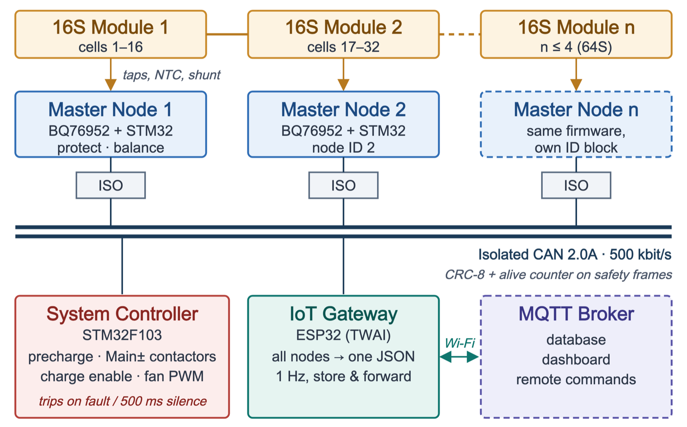
STOPPING → STANDBY once the current is low.
| State | What happens |
|---|---|
| STANDBY | All contactors open, waiting for the key |
| PRECHARGE | Load capacitors charge slowly through a resistor |
| RUN | Main contactors closed, pack is in use |
| STOPPING | Waits for the current to fall, then opens the contactors |
| FAULT | Everything open; needs the fault cleared and the key turned OFF → ON |
Designed in EasyEDA: 4 layers, 92.3 × 71.5 mm, 162 parts. The bare boards were fabricated by JLCPCB.
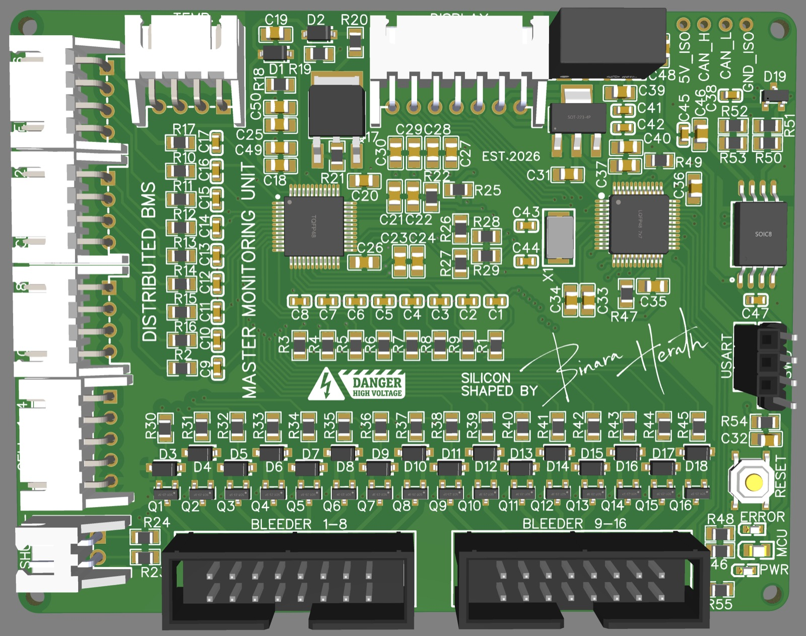
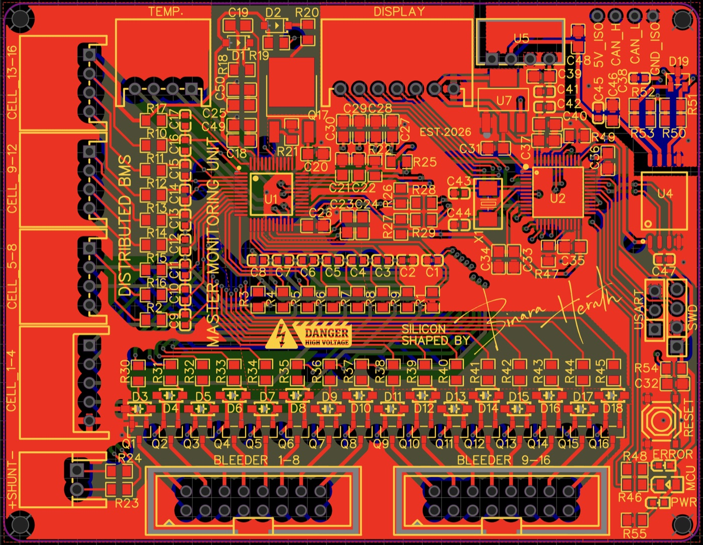
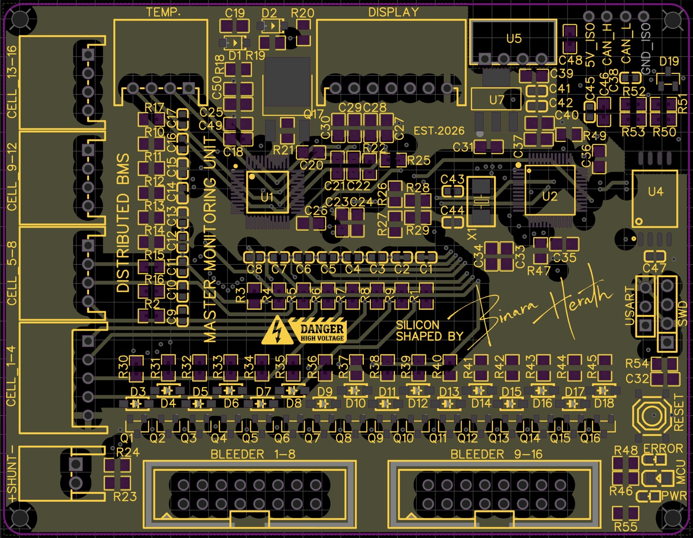
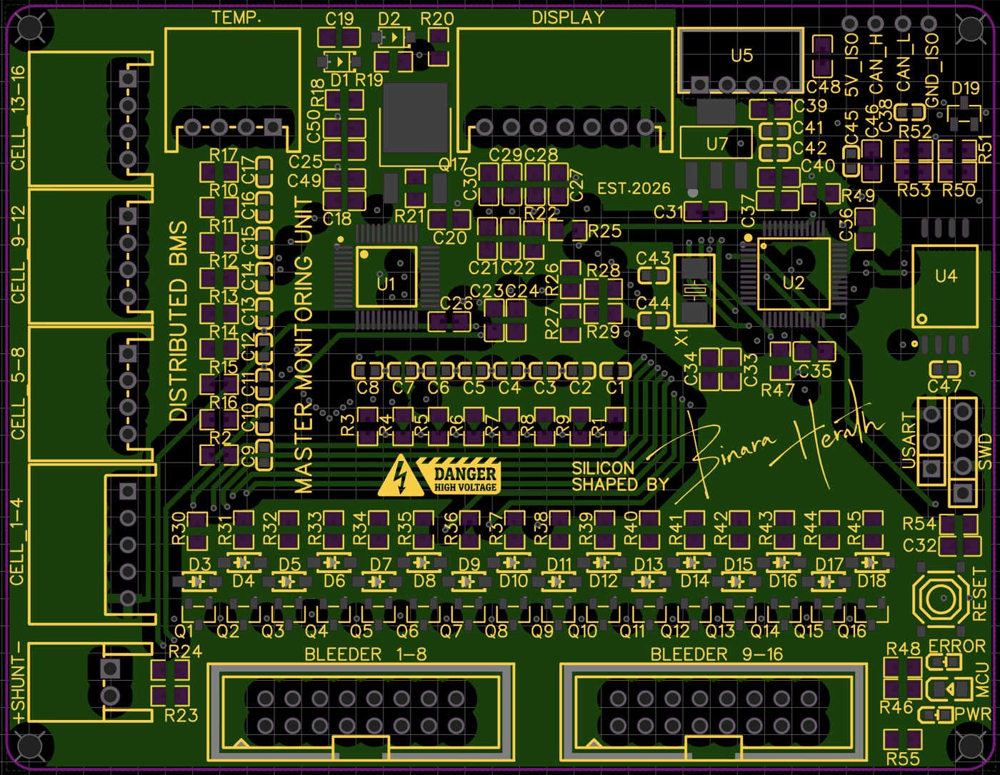
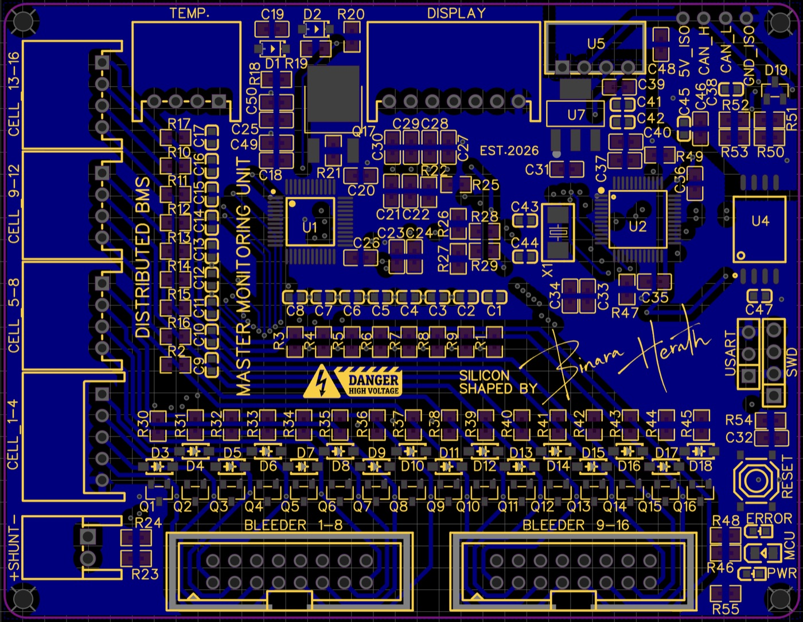
3D view: cell and shunt connectors on the left, bleeder headers at the bottom, isolated CAN connector at the top right.
All 17 cell-sense lines are filtered (100 Ω / 220 nF). Each cell has its own transistor driver for the external bleeder resistor.
The shunt input has a differential filter for clean readings.
The reset pin is controlled by the MCU with a short pulse, so the chip can never be shut down by accident.
Split 120 Ω termination and ESD protection. One 4-pin connector carries 5 V, CAN_H, CAN_L and GND.
The dashboard runs on any computer with Docker and opens in the browser, including on a phone on the same WiFi.
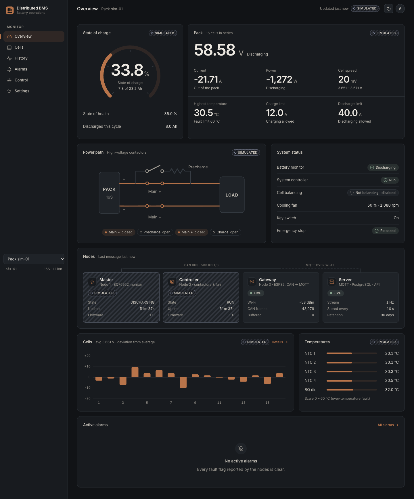
Every value shows where it came from. A demo simulator can run as a separate pack, so the dashboard can be shown without the battery, and simulated data is never mixed with the real pack's data.
| Microcontrollers | STM32F103C8T6 (Cortex-M3, 72 MHz) × 2 · ESP32-WROOM-32 (DevKit V1) |
| Battery front end | TI BQ76952 (16S AFE, coulomb counter, HW protection, balance switches) |
| Isolation and bus | TI ISO1042 isolated CAN FD transceiver · Mornsun B0505S · NUP2105 ESD |
| Other parts | AMS1117-3.3 · MJD44H11 pre-regulator · MMBT2222A + B5819W bleeder drivers · 0.96" SSD1306 OLED |
| PCB | EasyEDA (schematic + 4-layer layout) · JLCPCB fabrication |
| STM32 firmware | C11 · STM32 HAL · STM32CubeMX · CMake + Ninja · arm-none-eabi-gcc |
| ESP32 firmware | C++17 · Arduino-ESP32 (ESP-IDF TWAI driver, FreeRTOS) · PlatformIO · PubSubClient · ArduinoJson 7 |
| Protocols | CAN 2.0A · I²C · SPI · UART · MQTT 3.1.1 · JSON · NTP · TLS (optional) |
| Tools | VS Code + STM32Cube extension · Cortex-Debug / OpenOCD · ST-Link V2 |
| Data and dashboard | Eclipse Mosquitto · Spring Boot (Java 21) · PostgreSQL · React + TypeScript · Docker Compose |
!Safety: this pack stores more than a kWh at 60 V. New firmware is tested with the contactors disconnected or on a current-limited supply first, with an E-stop in the loop, and the BQ76952 hardware protections are never bypassed.